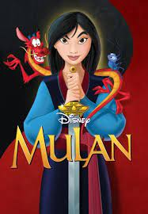

 Karnivalkommittén reagerar starkt efter dödsfallet: "Jag är chockad över Peter Griesemann, hans fru och dotters plötsliga död. Min djupaste sympati går till familjen. Peter hade inte bara expertis och entreprenörsanda, han hade också ett stort hjärta för människor. Karnevalen och jag personligen har förlorat en värdefull rådgivare och en lojal vän i honom”, säger nuvarande presidenten Chris Kuckelkorn till Report-K. Griesemann ska själv ha flugit planet som lyfte från Jerez i södra Spanien där familjen har en bostad. Det är inte ovanligt att familjen flög mellan Jerez och Köln där företaget har sitt säte, enligt Report-K. Strax efter starten fick planet problem med trycket i kabinen och utanför Polens kust tappades kontakten med flygtornet. Utanför Lettland kraschade planet. Familjemedlemmarna har ännu inte hittats. Texten uppdateras.
Karnivalkommittén reagerar starkt efter dödsfallet: ”Jag är chockad över Peter Griesemann, hans fru och dotters plötsliga död. Min djupaste sympati går till familjen. Peter hade inte bara expertis och entreprenörsanda, han hade också ett stort hjärta för människor. Karnevalen och jag personligen har förlorat en värdefull rådgivare och en lojal vän i honom”, säger nuvarande presidenten Chris Kuckelkorn till Report-K. Griesemann ska själv ha flugit planet som lyfte från Jerez i södra Spanien där familjen har en bostad. Det är inte ovanligt att familjen flög mellan Jerez och Köln där företaget har sitt säte, enligt Report-K. Strax efter starten fick planet problem med trycket i kabinen och utanför Polens kust tappades kontakten med flygtornet. Utanför Lettland kraschade planet. Familjemedlemmarna har ännu inte hittats. Texten uppdateras.